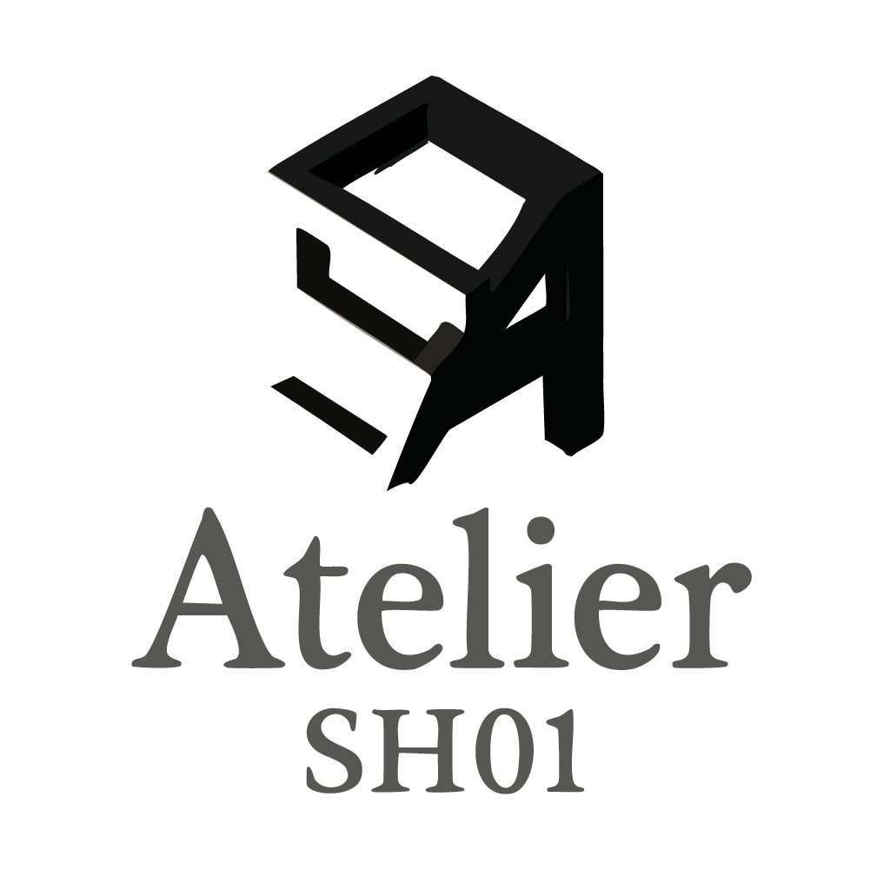

Artist / Painter — Nagano, Japan
描く。 掘る。 還る。
油彩を起点に、映像・立体・インスタレーションへと展開する多層的な制作。土地の記憶から、存在の根源を問い続ける。
Scroll
Latest News — 2026.06.26
グループ展「next × N-ART 展」の展示ページを公開しました。
Artist / Painter — Nagano, Japan
油彩を起点に、映像・立体・インスタレーションへと展開する多層的な制作。土地の記憶から、存在の根源を問い続ける。
〈いと〉とは何か。例えば、生まれた土地の記憶、地質、感覚——それ以上還元できない、存在の最小単位。
私は事物の存在に纏わるあらゆる傾向を、〈単位世界（＝洞窟）〉を構成する最小の事物（＝いと）と捉え、制作しています。〈いと〉とは、〈物語〉のそれ以上細分化できない要素です。そして〈物語〉とは、人間存在そのものです。なぜなら、私たち人間はすべてを〈物語〉として理解し、機能させて生きているからです。
私にとっての〈いと〉は、自分が生まれ育った場所である"左美都（さみず、現在の長野県長野市信更町三水）"という地域です。ごく私的な経験を起点とし、その土地に深く根ざした記憶（歴史）や地質、感覚と向き合うことで、私はこの〈洞窟〉の根源を探ろうとしています。
私の制作の出発点となるのは、油彩による描画です。描画の過程（＝脱領土化）を通して〈いと〉が見いだされ、次に、あるいは同時にさまざまな手法による解釈・再読（＝再領土化）が始まります。再領土化される表現は、絵画にとどまらず、映像、立体、インスタレーションといった多層的な形式へと展開し、複合していきます。
Works
作品年譜
Profile & Goals

津田 翔一
Tsuda Shoichi
| Origin | 長野県長野市信更町三水（左美都） |
| Practice | 油彩絵画を起点に、映像・立体・インスタレーションへと展開する多層的な制作活動を行う。 |
| Theme | 〈いと〉と〈洞窟（単位世界）〉。土地の記憶・地質・神話・伝承を通じた存在の根源の探求。 |
| Sequence | 左美都の神話と伝承 / 異体・洞窟・難民・少年兵・素描 各系（シーケンス） |
Current Goals
01
ヴェネツィア・ビエンナーレへの出品・出展
国際美術展への出品・出展を目指し、左美都の記憶と普遍的な人間存在への問いを世界に届ける。
02
作品販売 Atelier SH01 での資金調達
オンラインショップにて作品・グッズの販売を行っています。人文知へのささやかな投資として、お迎えいただけましたら幸いです。

News
Contact
展覧会・作品購入・取材・コラボレーション等、お気軽にご連絡ください。
問い合わせフォームへ →